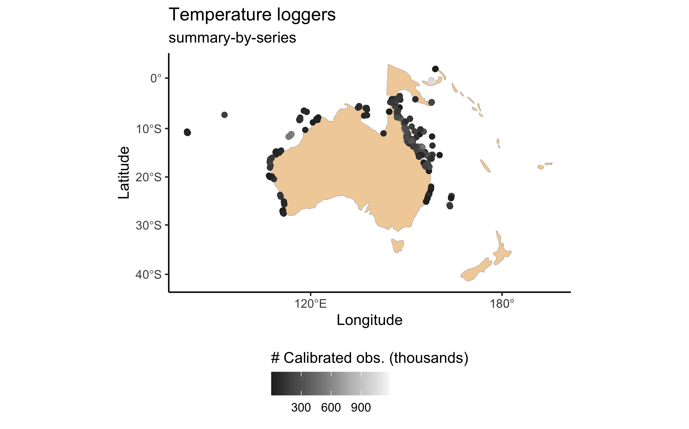

The very first thing to do is read the documentation on our README page. Make sure you have the package properly installed, and that your personal AIMS Data Platform API Key has been downloaded.
As per the installation instructions, we strongly suggest that you hide your API Key permanently in your .Renviron file and set the object my_api_key to NULL in the chunk below. You can read more about why that is important here.
# set my_api_key to NULL after successfully placing it in .Renviron
my_api_key <- NULLWe now load dataaimsr:
How this package works
dataaimsr contains two sets of monitoring data collected by AIMS—the Australian Institute of Marine Science—since the 1980’s: the Weather Station dataset which contains encompasses data for different parameters (e.g. Air Temperature, Air Pressure, Chlorophyll, and many others); and the Sea Water Temperature Loggers dataset which contains records of (you guessed it!) sea water temperature at different sites and water depths.
The datasets are very large, and as such they are not locally stored. They are instead downloaded via the API and unique DOI identifier (just hover over the data links above to see the actual DOI codes). The datasets are structured by sites, series and parameters. A series is a continuing time-series, i.e. a collection of deployments measuring the same parameter (e.g. Air Temperature, Air Pressure, Chlorophyll) at the same subsite. So, for a given site and parameter, there might exist multiple subsites and therefore series, in which case they are most likely distinguishable by depth.
For the Sea Water Temperature Loggers dataset, series is synonymous with the variable called subsite. For the Weather Station dataset, it is the combination of subsite and parameter.
This vignette gives an overview of how one would go about discovering the overall information contained in the datasets. For dataset-specific vignettes, see our other vignette pages.
Discover a dataset
The AIMS Data Platform API points to the full metadata of each dataset. We are currently working on ways to facilitate the visualisation of both datasets and their multiple features directly through the R package. At the moment though it is only possible to visualise summary information for the Sea Water Temperature Loggers dataset. A similar feature for the Weather Station dataset will be implemented in the near future (likely early 2021)—so for now, please refer to the online metadata to discover from where (and when) you can download data.
Data summary
The first step would be to visualise the dataset. Let’s do this by mapping all available sites for the Sea Water Temperature Loggers dataset using the main function called aims_data:
sdata <- aims_data(target = "temp_loggers", api_key = my_api_key,
summary = "summary-by-series")
head(sdata)
#> site_id site subsite_id subsite series_id series parameter parameter_id time_coverage_start time_coverage_end lat lon depth uncal_obs cal_obs qc_obs
#> 1 1 Agincourt Reef Number 3 2687 AG3FL1 2687 AG3FL1 Water Temperature 1 1996-03-30 2008-12-11 -15.9903 145.8212 0 23130 110480 110480
#> 2 1 Agincourt Reef Number 3 14276 AG3SL1old 14276 AG3SL1old Water Temperature 1 1996-03-30 2011-07-21 -15.9905 145.8213 5 114450 216794 216794
#> 3 3 Cleveland Bay 3007 CLEVAWSSL1 3007 CLEVAWSSL1 Water Temperature 1 2004-05-13 2008-05-03 -19.1557 146.8813 7 11951 53231 53231
#> 4 3 Cleveland Bay 3069 CLEVAWSFL1 3069 CLEVAWSFL1 Water Temperature 1 2005-09-15 2005-12-22 -19.1557 146.8813 1 0 4656 4656
#> 5 4 Davies Reef 2629 DAVFL1 2629 DAVFL1 Water Temperature 1 1997-08-26 2019-06-10 -18.8065 147.6688 1 437544 566585 566585
#> 6 4 Davies Reef 2630 DAVSL1 2630 DAVSL1 Water Temperature 1 1996-05-02 2017-05-07 -18.8060 147.6686 8 369317 495663 495608The summary argument here is key. It should only be flagged when the user wants an overview of the available data. Again, this currently implemented for the Sea Water Temperature Loggers dataset. One can visualise summary-by-series or summary-by-deployment. The output of aims_data is a data.frame of class aimsdf.
Notice that sdata contains a lot of information, most of which is related to site / series / parameter ID. Each row corresponds to a unique series, and a certain site may contain multiple series; in such cases, series generally differ from one another by depth. The columns time_coverage_start and time_coverage_end are probably one of the most valuable pieces of information. They provide the user with the window of data collection for a particular series, which is probably crucial to decide whether that particular series is of relevance to the specific question in hand.
Also note that there are three columns containing the total number of observations in a series: uncal_obs, cal_obs and qc_obs, which respectively stand for uncalibrated, calibrated, and quality-controlled observations. Calibrated and quality-controlled are generally the same. Instruments are routinely calibrated (mostly once a year) in a temperature-controlled water bath and corrections applied to the data. After calibration, all data records are quality controlled based on the following tests: 1) clip to in-water only data, using deployment’s metadata, 2) impossible value check: data outside a fixed temperature range (14˚C – 40˚C) is flagged as bad data, 3) spike test: individual extreme values are flagged as probably bad and 4) Excessive gradient test: pairs of data that present a sudden change in the slope are flagged as probably bad. If any data record fails at least one of the tests, a QC flag equal to 2 is returned, otherwise, the QC flag is set to 1.
aimsdf objects can be plotted using the plot function. For summary data such as sdata, plot will always generate a map with the points around Australia and associated regions, coloured by the number of calibrated observations:
plot(sdata, ptype = "map")
Filter values
In the case of the Weather Station dataset, knowing what sites are out there is a bit tricky. However, currently we have a convenience function called aims_filter_values which allows one to query what sites, series and parameters are available for both datasets:
head(aims_filter_values("weather", filter_name = "series"))
#> series_id series
#> 1 104918 Myrmidon Reef Weather Station Wind Speed (scalar avg b 10 min)
#> 2 100686 Saibai Island Weather Station Hail Duration
#> 3 266 Orpheus Island Relay Pole 3 Wind Direction (Vector Average 30 Minutes)
#> 4 2639 Hardy Reef Weather Station Wind Direction (Vector Standard 10 Minutes)
#> 5 10243 Raine Island Weather Station Air Temperature
#> 6 258 Orpheus Island Relay Pole 3 Wind Speed (Scalar avg 10 min)The downside is that one cannot know what time window is available for each one of those, nor how they are nested (i.e. series / parameter / site). In a way though the series name generally gives that information anyway (see code output above). If knowing the available observation window is absolutely crucial, then as mentioned above the user should refer to the online metadata.
Download slices of datasets
Now that we know how to explore the datasets and what data is out there, we finish this vignette by showing an example of how one would go about downloading actual monitoring data.
We say slices of datasets because AIMS monitoring datasets are of very high temporal resolution and if one tries to download the entire thing it might take hours. Generally that is why we download slices of data at a time, and for that we need filters.
Data filters
Filters are the last important information the user needs to know to master the navigation and download of AIMS monitoring datasets. Each dataset can filtered by attributes which can be exposed with the function aims_expose_attributes:
aims_expose_attributes("weather")
#> $summary
#> [1] NA
#>
#> $filters
#> [1] "site" "subsite" "series" "series_id" "parameter" "size" "min_lat" "max_lat" "min_lon" "max_lon" "from_date" "thru_date" "version" "cursor"
aims_expose_attributes("temp_loggers")
#> $summary
#> [1] "summary-by-series" "summary-by-deployment"
#>
#> $filters
#> [1] "site" "subsite" "series" "series_id" "parameter" "size" "min_lat" "max_lat" "min_lon" "max_lon" "from_date" "thru_date" "version" "cursor"The help file (see ?aims_expose_attributes) contains the details about what each filter targets. So, having an understanding of the summaries and what filters are available provide the user with a great head start.
Downloading the data is achieved using the same aims_data function, however now we do not specify a summary argument, and instead implement filters. For example, let’s say we want to download all the data collected at the Yongala for a specific time window:
wdata_a <- aims_data("weather", api_key = my_api_key,
filters = list(site = "Yongala",
from_date = "2018-01-01",
thru_date = "2018-01-02"))The returned aimsdf object in this case has attributes which give us summary crucial information:
metadataa doi link containing the metadata record for the data seriescitationthe citation information for the particular datasetparametersan outputdata.frame
These can be directly extracted using the convenience functions aims_metadata, aims_citation and aims_parameters, e.g.:
aims_metadata(wdata_a)
#> [1] "Metadata record https://doi.org/10.25845/5c09bf93f315d"This example data contains multiple parameters available for this site at the specified time, and the actual measurements are either raw or quality-controlled. For monitoring data (i.e. when summary = NA in a aims_data call), we can either visualise the data as a time series broken down by parameter, or a map showing the sites with some summary info. If the parameters are not specified, then dataaimsr will plot a maximum of 4 parameters chosen at random for a time series plot. Alternatively the user can specify which parameters are to be plotted.
# check parameters with aims_parameters(wdata_a)
plot(wdata_a, ptype = "time_series",
pars = c("Water Pressure", "Chlorophyll"))
We can also refine even further by including a time window to download the data:
More info
See our other vignette pages for further dataset-specific explorations.